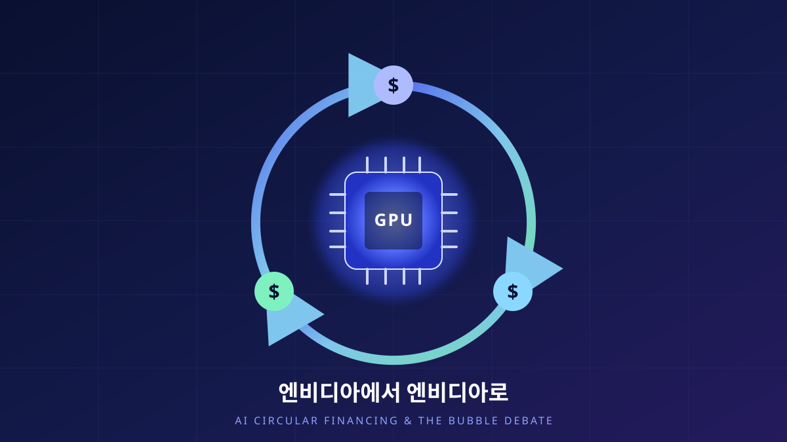

엔비디아에서 엔비디아로
엔비디아가 OpenAI에 최대 1,000억 달러를 투자하기로 했다. 그런데 그 돈의 상당 부분은 다시 엔비디아 칩을 사는 데 쓰인다. 공급자이자 고객이자 투자자인 한 회사를 중심으로 도는 이 자금의 고리를, 그리고 그 고리를 두고 벌어지는 ‘버블’ 논쟁을, 엔지니어의 눈으로 차분히 뜯어본다.

같은 이름이 세 번 등장하는 거래
한 장의 자금 흐름도를 상상해 보자. 화살표를 따라가면 돈은 엔비디아에서 출발해 OpenAI로 흘러들고, OpenAI에서 칩 값으로 빠져나가 데이터센터와 클라우드로 옮겨 갔다가, 결국 엔비디아의 매출 계정으로 되돌아온다. 출발점과 도착점에 같은 회사 이름이 적혀 있다. 공급망의 양 끝과 그 사이의 투자 라인에까지, 한 이름이 세 번 등장하는 셈이다.
이 그림이 사람들을 불편하게 만드는 이유는 직관적이다. 회사가 자기 고객에게 돈을 대 주고, 그 고객이 그 돈으로 자기 물건을 사 준다면, 그렇게 만들어진 ‘매출’은 진짜 시장 수요일까 아니면 회계 장부 위를 도는 숫자일까. 2025년 가을 이후 ‘AI 버블’이라는 말이 하나의 독립된 담론으로 자리 잡은 데에는, 바로 이 순환의 냄새가 깔려 있다.
하지만 냄새만으로 결론을 내리는 것은 엔지니어의 방식이 아니다. 먼저 발표된 사실이 정확히 무엇인지, 어디까지가 확정이고 어디부터가 추정인지 구분하는 데서 시작하자.
발표된 것, 그리고 아직 확정되지 않은 것
2025년 9월 22일, 엔비디아와 OpenAI는 전략적 파트너십을 공식 발표했다. 골자는 세 가지다. 첫째, 앞으로 10GW 규모의 엔비디아 시스템을 배치한다. 둘째, 그 배치를 뒷받침하기 위해 엔비디아가 OpenAI에 최대 1,000억 달러를 단계적으로 투자한다. 셋째, 첫 1GW는 엔비디아의 차세대 베라 루빈(Vera Rubin) 플랫폼 위에서 2026년 하반기부터 가동을 시작한다. 10GW라는 규모는 엔비디아의 설명에 따르면 대략 GPU 400만~500만 개에 해당한다.
중요한 것은 돈의 방향이다. 발표와 후속 보도를 종합하면, OpenAI는 칩과 시스템 값을 현금으로 지불하고, 엔비디아는 비지배(non-controlling) 지분 형태로 OpenAI에 투자한다. 즉 엔비디아가 넣은 투자금이 곧바로 OpenAI의 칩 대금으로 ‘꼬리표 붙어’ 되돌아오는 것은 아니지만, 큰 그림에서 두 흐름은 같은 파트너십 안에서 맞물려 돌아간다. 공급자가 고객의 자본구조에 지분으로 참여하고, 그 고객이 공급자의 최대 매출처가 되는 구조다.
그리고 한 가지 더. 이 파트너십은 의향서(LOI) 성격의 발표였고, 이후 여러 달 동안 최종 계약으로 확정되지 않은 상태가 이어졌다. 2025년 11월, 엔비디아는 “OpenAI와의 거래가 성사된다는 보장은 없다”는 취지의 리스크 문구를 남겼고, 최고재무책임자(CFO)인 콜레트 크레스(Colette Kress)는 이 합의가 “여전히 확정적이지 않다(still not definitive)”고 언급했다. 12월 시점까지도 1,000억 달러 규모의 합의는 서명 전 단계로 보도됐다. 그러니 우리가 다루는 대상은 ‘이미 굳은 사실’이 아니라, 발표된 큰 틀 + 아직 열려 있는 세부라는 점을 계속 염두에 두어야 한다.
누가 누구에게 팔고, 누가 누구에게 대는가
순환의 정체를 보려면 화살표를 하나씩 떼어 놓아야 한다. 이 파트너십에서 엔비디아는 세 개의 모자를 동시에 쓴다. 칩을 파는 공급자, 그 칩으로 돌아가는 회사의 투자자, 그리고 그 회사가 만든 서비스의 잠재적 고객·검증자다. 아래 그림은 이 세 역할이 하나의 고리로 닫히는 모습을 단순화한 것이다.
회의론의 핵심은 이 그림의 ①과 ③이 사실상 같은 주머니에서 나와 같은 주머니로 돌아온다는 데 있다. 극단적으로 말하면, 공급자가 자기 매출을 스스로 조달하는 셈이니 그 매출은 ‘외부 수요’의 증거가 되지 못한다는 것이다. 게다가 이 구조는 엔비디아–OpenAI 양자에 국한되지 않는다. 블룸버그는 마이크로소프트·OpenAI·엔비디아 사이의 상호 결제와 지분·클라우드 계약을 하나의 ‘순환 거래’ 지도로 시각화했는데, 그 그림에서는 세 회사가 서로에게 고객이자 투자자이자 인프라 공급자로 얽혀 있다.
반론도 만만치 않다. 공급자가 대형 고객의 초기 투자를 분담하는 벤더 파이낸싱(vendor financing)은 통신·반도체 산업에서 오래된 관행이고, 그 자체가 사기나 거품의 증거는 아니다. 지분 투자와 물품 판매는 회계적으로 분리된 거래이며, 엔비디아의 지분은 비지배 소수지분이라 OpenAI의 구매 결정을 강제하지 못한다. 문제는 구조가 순환한다는 사실 자체가 아니라, 그 고리를 지탱할 만큼의 실제 최종 수요가 제때 따라오느냐다. 그래서 다음 장은 숫자로 넘어간다.
Chapter 4. 단위경제학매출은 완만한데, 자본지출은 수직이다
이 논쟁의 무게중심은 결국 하나의 질문에 실린다. 들어가는 돈(자본지출)과 나오는 돈(매출)의 곡선이 언제 만나는가. 여기서부터는 발표된 사실이 아니라 분석기관의 추정치임을 분명히 하고 읽어야 한다. 자산운용사 만 그룹(Man Group)의 인사이트 자료는 다음과 같은 숫자를 제시했다.
| 항목 | 규모 | 성격 |
|---|---|---|
| OpenAI 2025년 매출 | 약 $13B (130억 달러) | [분석기관 추정] |
| 8년간 자본지출 약속(누적) | 약 $1.4T (1.4조 달러) | [분석기관 추정] |
| 2028년 단일연도 영업손실 전망 | 약 $74B (740억 달러) | [분석기관 추정] |
| 엔비디아 → OpenAI 투자 약속 | 최대 $100B (1,000억 달러) | 발표(LOI, 미확정) |
| 배치 규모 | 10GW · GPU 400만~500만 개 | 발표 |
이 표를 그대로 믿을 필요는 없다. 오히려 핵심은 규모의 격차에 있다. 한쪽에는 연 130억 달러대의 매출이 있고, 다른 한쪽에는 8년에 걸친 1.4조 달러 규모의 지출 약속이 있다. 두 자리 수가 다르다. 이 간극을 앞으로의 폭발적 수요 성장이 메워 준다는 것이 낙관론의 전제이고, 메우지 못한다는 것이 회의론의 전제다.
왜 자본지출 곡선이 이렇게 가파른가. 대규모 AI 인프라는 세 가지 비용을 앞세워 끌어온다. GPU와 시스템의 선(先)투자, 그 하드웨어의 빠른 감가상각, 그리고 상시 가동에 드는 막대한 전력비다. 반도체는 세대가 짧아 몇 년이면 경제적 수명이 다하고, 10GW 규모의 전력은 그 자체로 도시 하나의 소비량에 견줄 만하다. 즉 돈은 지금 크게 들어가는데, 그 투자를 정당화할 매출은 나중에 완만하게 따라온다. 아래 그림은 이 비대칭을 개념적으로 표현한 것이다.
고리가 유지되는 길, 그리고 끊어지는 길
순환 구조는 그 자체로는 선하지도 악하지도 않다. 그것이 ‘앞당겨 조달한 성장’이 될지 ‘스스로 부풀린 거품’이 될지는, 몇 가지 조건에 달려 있다. 강세론과 약세론을 같은 저울에 올려 보자.
| 쟁점 | 루프 유지(강세론) | 루프 파열(약세론) |
|---|---|---|
| 최종 수요 | 기업·소비자의 AI 지출이 매년 급증해 곡선을 따라잡는다 | 실사용·과금이 인프라 투자 속도를 못 따라간다 |
| 순환 구조 | 표준적 벤더 파이낸싱 · 지분과 판매는 분리 | 공급자가 자기 매출을 조달하는 자기참조적 성장 |
| 단위경제학 | 모델 효율·칩 성능 향상으로 추론 원가가 급락 | 감가상각·전력비가 매출총이익을 잠식 |
| 자금 조달 | 초저리·풍부한 자본이 인프라를 뒷받침 | 금리·유동성이 조이면 자본지출 약속이 취소된다 |
| 계약 상태 | 단계적 집행이라 수요를 보며 조절 가능 | LOI가 최종 계약으로 확정될지 아직 불확실 |
| 집중 위험 | 선도 기업에 자원을 몰아 규모의 경제 확보 | 소수 기업·소수 칩에 시스템 전체가 연동 |
고리가 유지되는 길은 결국 하나로 수렴한다. 인프라에 앞서 쏟아부은 돈을, 뒤따라오는 실제 최종 수요가 갚아 주는 것. 기업이 AI로 실질 생산성을 얻어 기꺼이 값을 치르고, 추론 원가가 하드웨어·모델 효율로 빠르게 떨어져 매출총이익이 살아난다면, 자본지출 곡선과 매출 곡선은 뒤늦게라도 만난다. 단계적 집행 구조는 이 시나리오에 유리하다. 수요가 미지근하면 다음 단계 투자를 늦추면 되기 때문이다. 실제로 파트너십이 여러 달 ‘미확정’으로 남아 있는 것 자체가, 양측이 속도를 조절할 여지를 두고 있다는 신호로도 읽힌다.
끊어지는 길은 그 반대다. 감가상각과 전력비가 매출총이익을 갉아먹는 사이 최종 수요가 예상만큼 오지 않으면, 어느 단계에서 자본지출 약속이 취소되거나 미뤄진다. 그 순간 순환의 한 마디가 끊기고, 공급자의 ‘매출 전망’이 먼저 흔들린다. 문제를 키우는 것은 집중도다. 소수의 선도 기업과 특정 칩 아키텍처에 시스템 전체가 촘촘히 연동돼 있으면, 한 고리의 균열이 전체로 번지기 쉽다. 2025년 11월 전후로 매출 대비 과도한 데이터센터 투자를 근거로 버블 우려가 고조된 것도 바로 이 연쇄성 때문이다.
‘가짜냐’가 아니라 ‘제때냐’
엔지니어로서 이 논쟁을 보면, 자꾸 시스템의 지연(latency)과 버퍼(buffer)가 떠오른다. AI 인프라 투자는 미래 수요를 미리 채워 두는 거대한 버퍼다. 버퍼가 크면 폭증하는 요청을 매끄럽게 흡수하지만, 채워 둔 만큼 팔리지 않으면 그 자체가 비용이 된다. 순환 자금 구조는 이 버퍼를 남보다 빨리, 남보다 크게 쌓기 위한 금융 장치다. 그것이 현명한 선제 투자였는지 무모한 과잉이었는지는, 결국 수요라는 후행 지표가 도착한 뒤에야 확정된다.
그래서 나는 이 사안을 ‘거품이다/아니다’의 이분법으로 닫고 싶지 않다. 발표된 사실은 사실대로(10GW·최대 1,000억 달러·미확정 LOI) 인정하고, 추정치는 추정치로(만 그룹의 매출·자본지출·손실 전망) 괄호에 넣은 채, 우리가 실제로 지켜봐야 할 계기판은 하나로 좁혀진다. 최종 수요가 자본지출 곡선을 제때 따라잡고 있는가. 그 바늘이 어느 쪽으로 움직이느냐가, 같은 순환 그림을 ‘앞당긴 성장’으로도 ‘부풀린 거품’으로도 만든다.
돈이 엔비디아에서 나와 엔비디아로 돌아오는 그 고리는, 그 자체로는 유죄도 무죄도 아니다. 고리를 유죄로 만드는 것은 순환이 아니라 공백 — 투자와 수요 사이에 벌어진 시차를 아무도 메우지 못하는 상황이다. 지금 우리가 목격하는 것은 그 시차를 두고 벌어지는, 규모만큼이나 불확실성도 거대한 하나의 베팅이다.
참고
- NVIDIA, “OpenAI and NVIDIA Announce Strategic Partnership to Deploy 10GW of NVIDIA Systems” (2025-09-22). 10GW 배치·최대 $100B 단계적 투자·첫 1GW 2026 하반기 Vera Rubin. https://nvidianews.nvidia.com/news/openai-and-nvidia-announce-strategic-partnership-to-deploy-10gw-of-nvidia-systems
- OpenAI, “OpenAI and NVIDIA announce strategic partnership” (2025-09-22). https://openai.com/index/openai-nvidia-systems-partnership/
- CNBC, “Nvidia to invest up to $100 billion in OpenAI” (2025-09-22). 구조: OpenAI 현금 지불 · NVIDIA 비지배 지분 투자. https://www.cnbc.com/2025/09/22/nvidia-openai-data-center.html
- CNBC, “Nvidia says no assurance of deal with OpenAI after $100 billion pact” (2025-11-19). 확정 계약 아님. https://www.cnbc.com/2025/11/19/nvidia-says-no-assurance-of-deal-with-openai-after-100-billion-pact.html
- Fortune, “Nvidia–OpenAI $100 billion deal not signed yet, Colette Kress” (2025-12-02). CFO “still not definitive.” https://fortune.com/2025/12/02/nvidia-openai-deal-not-signed-yet-100-billion-rally-colette-kress/
- Man Group, “The AI Bubble.” [분석기관 추정] OpenAI 2025 매출 ≈$13B · 8년 자본지출 약속 ≈$1.4T · 2028 영업손실 전망 ≈$74B. 본문의 재무 수치는 이 추정에 근거하며 확정 사실이 아니다. https://www.man.com/insights/the-ai-bubble
- Bloomberg, “AI’s Circular Deals” (2026). 마이크로소프트·OpenAI·NVIDIA 상호 결제·순환 거래 시각화. https://www.bloomberg.com/graphics/2026-ai-circular-deals/
- NPR, “The AI bubble question: revenue, data centers, and the risk of a bust” (2025-11-23). 매출 대비 데이터센터 투자 과열 우려. https://www.npr.org/2025/11/23/nx-s1-5615410/ai-bubble-nvidia-openai-revenue-bust-data-centers
- “AI bubble,” Wikipedia. ‘AI 버블’ 담론의 개괄. https://en.wikipedia.org/wiki/AI_bubble
- 본문의 그림 1·2는 저자가 위 자료를 바탕으로 구조·개념을 단순화해 그린 오리지널 도해이며, 그림 2의 곡선은 실제 수치가 아닌 개념적 표현이다. 이 글은 투자 조언이 아니다.